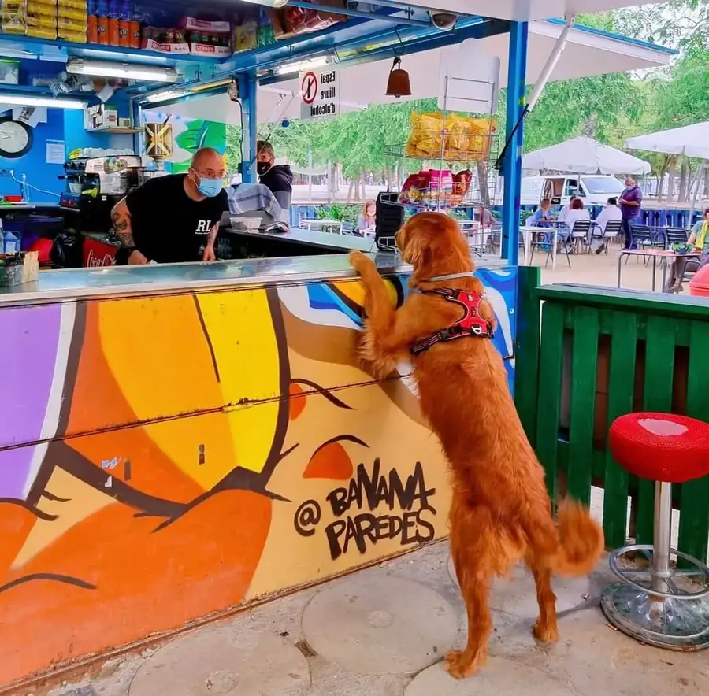
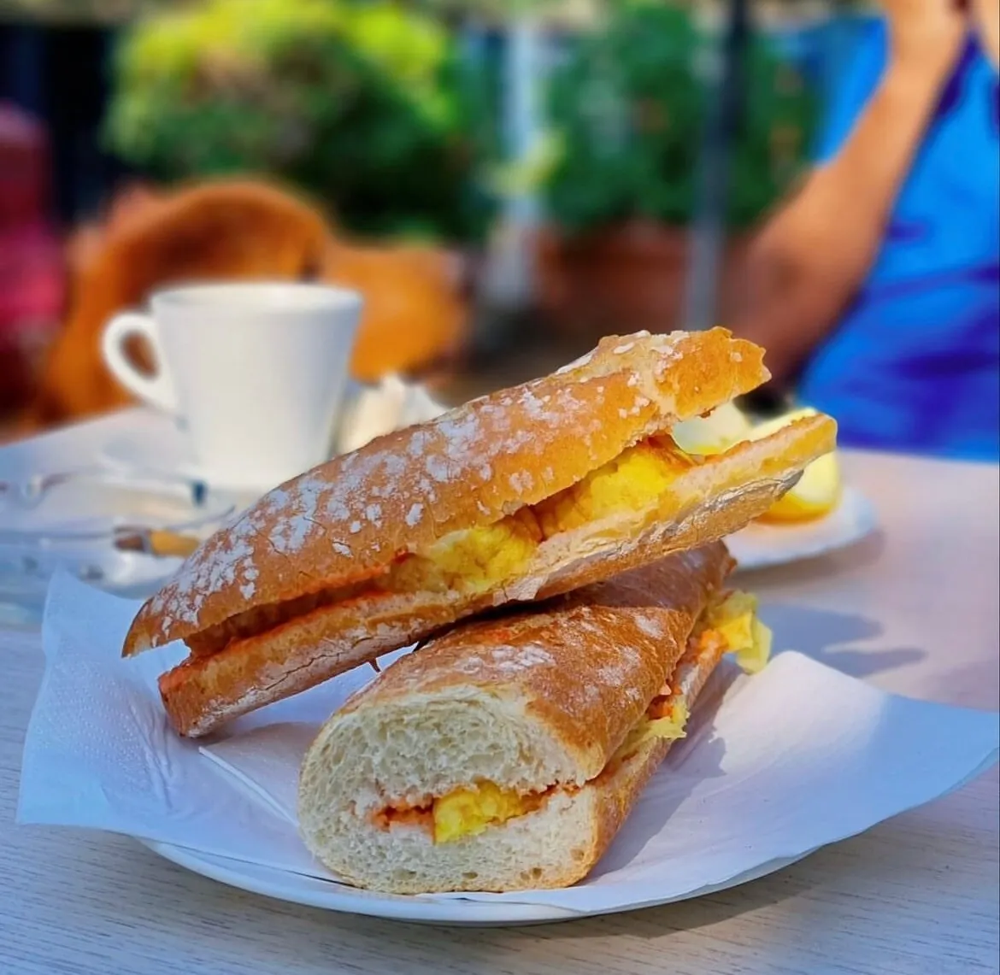
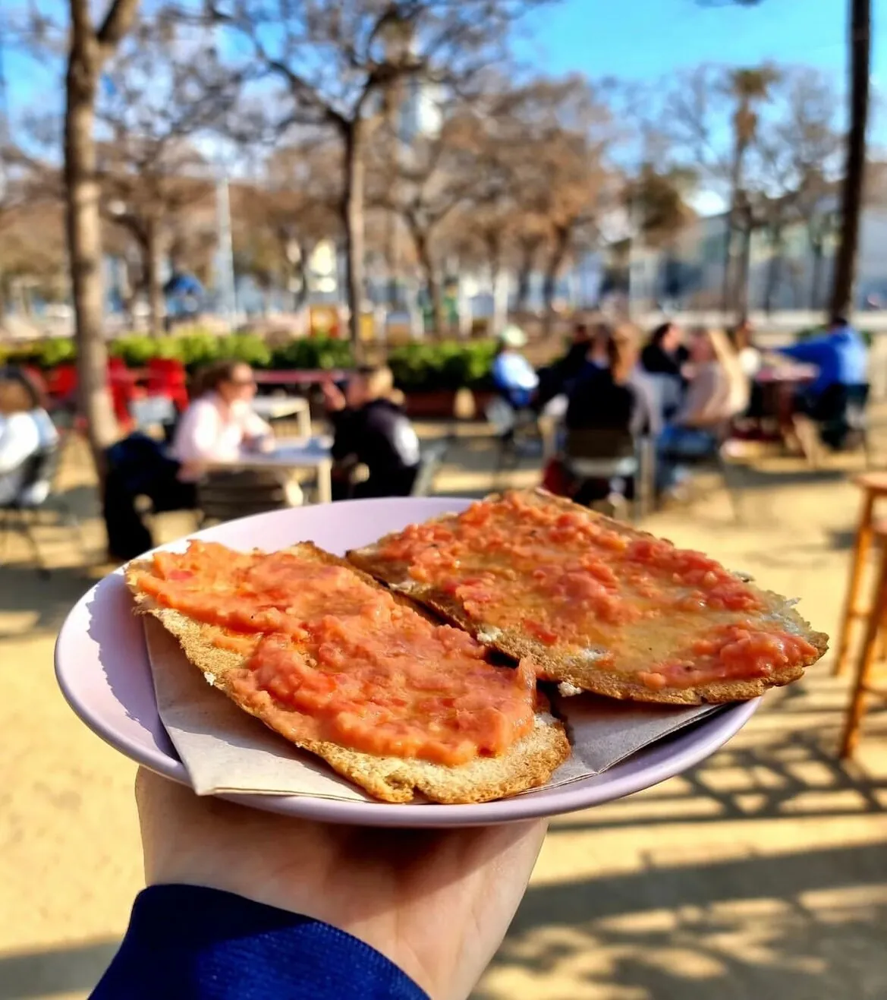
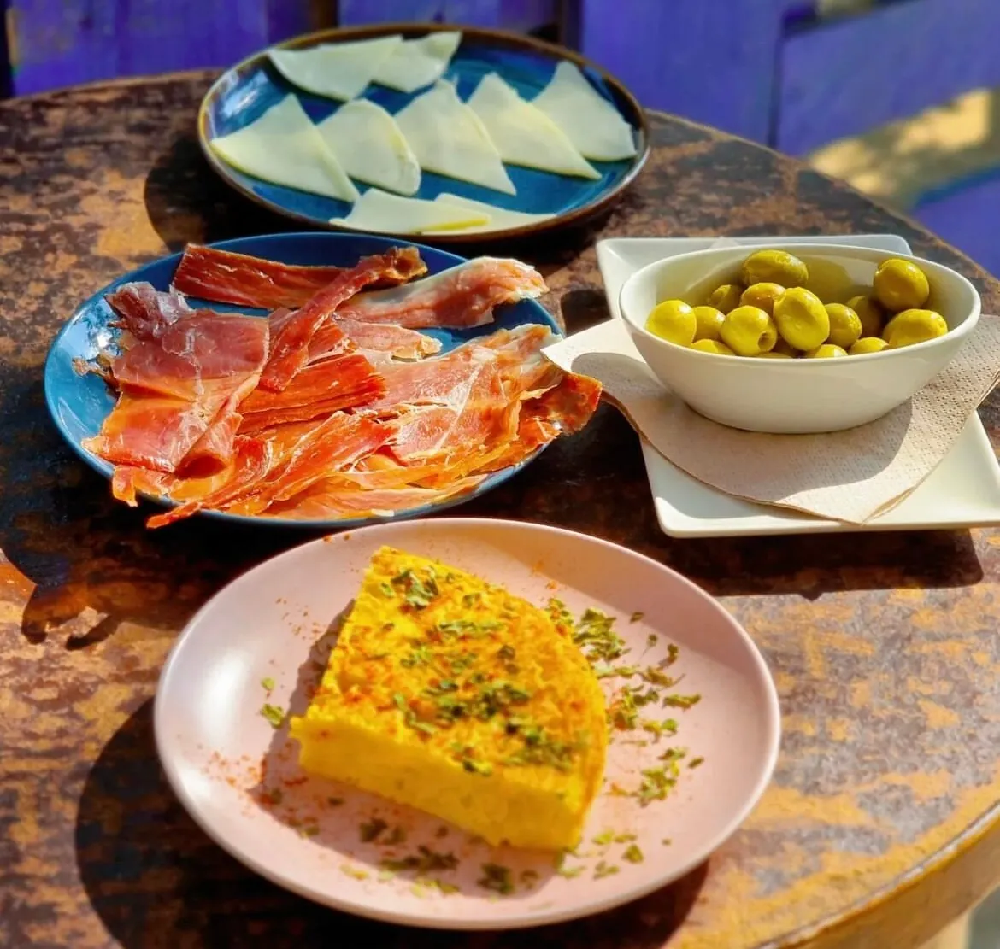

Un café en el parquesin necesidad de copa.
Café, bocatas, zumos y desayunos a dos pasos del mar, en el único quiosco del parque de la Barceloneta donde no se sirve alcohol. Proyecto del grupo GAMAR de reinserción sociolaboral. Abierto desde 2004 a familias, runners, vecinos, gente del Hospital del Mar y perros.

Un quiosco con otra misión.
GAMAR (Grup d'Ajuda Mútua d'Alcohòlics Rehabilitats) lleva el quiosco desde 2004. Tras la barra trabaja gente que ha dejado atrás la adicción al alcohol y busca su segunda oportunidad laboral. El café te lo sirve esa persona. Por eso el local no vende ni una sola cerveza.
«Un espacio seguro para los nuestros. Para los vecinos del barrio que querían un café tranquilo. Para las familias del parque, para los runners, para los perros. Para cualquiera que un día deje atrás la barra.»
Lo que empezó como un punto de apoyo entre los socios de GAMAR se convirtió poco a poco en un quiosco de barrio para todo el mundo. La clientela mezcla a las familias del parque, a las personas que practican yoga al amanecer, al personal del Hospital del Mar que cruza para desayunar, y a los miembros del grupo que se reúnen los sábados.
Además del trabajo de reinserción interno, GAMAR tiene un convenio con los juzgados para acoger a personas con trabajos en beneficio de la comunidad por causas relacionadas con el consumo de alcohol. El quiosco funciona como espacio de prácticas y aprendizaje real.
Aquí no hay alcohol. Hay todo lo demás.
Café, descafeinado, cortado, americano, capuccino. Zumos naturales recién exprimidos. Cervezas 0,0 si la necesitas. Refrescos y agua. Smoothies de fruta del mercado. Té variado. Si echas en falta una copa, este no es tu sitio. Si quieres uno donde nunca tropieces con ella, sí.
Un parque, el mar y los pinos.
El quiosco está dentro del Parc de la Barceloneta, rodeado de pinos, a 200 metros de la playa del Somorrostro. Las mesas están al aire libre bajo la sombra. Vienes en cualquier momento del día y siempre encuentras gente haciendo algo distinto.



Parc de la Barceloneta
- Lunes7:00 – 20:00
- Martes7:00 – 20:00
- Miércoles7:00 – 20:00
- Jueves7:00 – 20:00
- Viernes7:00 – 20:00
- Sábado8:00 – 20:00
- Domingo8:00 – 20:00
08003 Barcelona · a 200 m de la platja del Somorrostro · metro Barceloneta (L4)